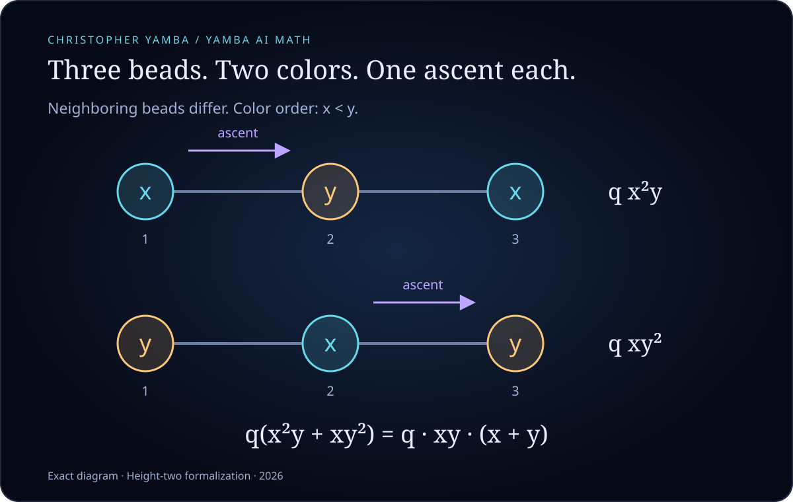
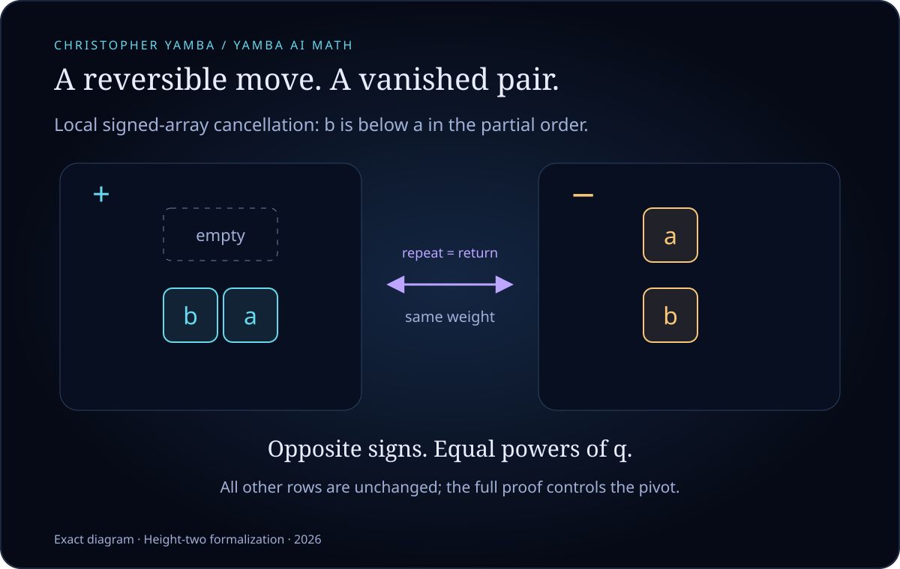
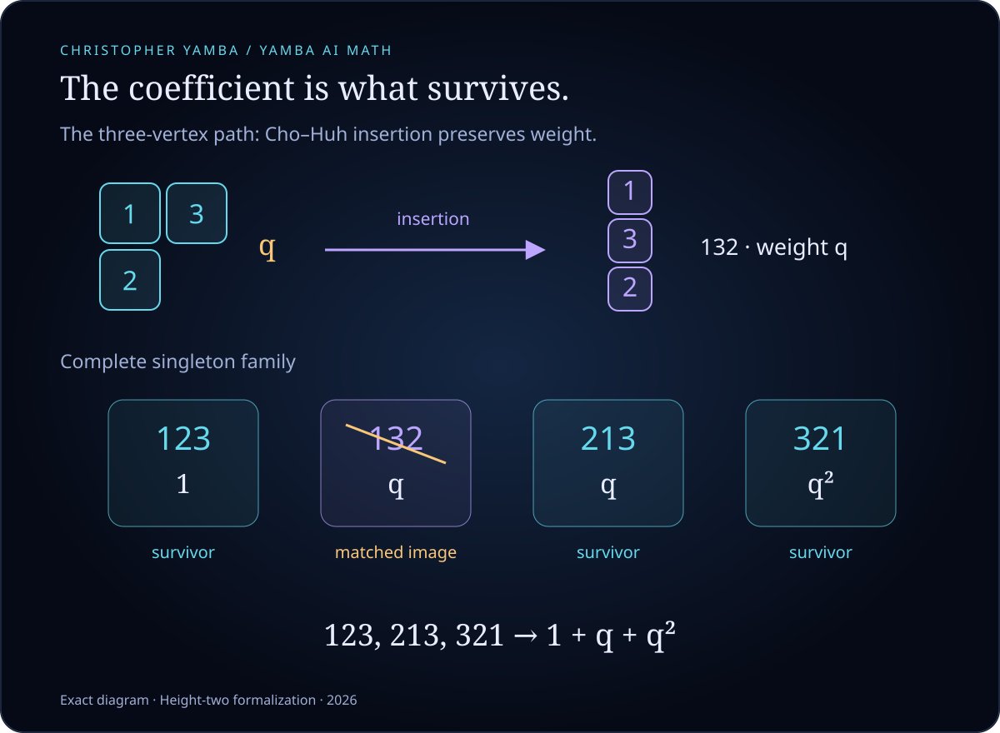

A difficult count can become beautiful when we discover what is allowed to disappear. In a corner of combinatorics, luminous colorings, little arrays of boxes and a perfectly reversible move reveal the same hidden order.
Imagine a necklace with just three beads, laid out in a line. Give each bead a color, with one rule: neighbors must have different colors. The two end beads may match.
With two colors, there are only two possibilities: blue–gold–blue and gold–blue–gold. A child can find them. Yet the same question, asked for a carefully chosen family of larger graphs and with a little more information recorded, leads to a striking theorem about positivity.
At Yamba AI Math, we have completed a Lean formalization of this height-two theorem: a proof that a computer can check step by step, for every finite number of available colors. The mathematics is established work of Soojin Cho and JiSun Huh. Our contribution here is the formal verification and an explicit account of how the pieces fit together.
A count usually forgets its objects. We will let each coloring leave a small algebraic signature instead.
Name the first color x and the second y. Blue–gold–blue contributes x²y; gold–blue–gold contributes xy². The exponent remembers how often each color was used.
Now number the beads 1, 2, 3 from left to right, and order the colors blue < gold. Whenever an edge goes from a smaller vertex label to a larger one and the color increases too, give the coloring a factor q. Such an edge is an ascent. Each of our two colorings has exactly one ascent.

Our entire two-color story is therefore
The right side has revealed two elementary building blocks: choose both colors, giving xy; then choose one color, giving x + y. A sum of colorings has become a product of simple choices.
For many colors, write eₖ for the sum of all products formed by choosing k distinct colors. Thus e₁ = x₁ + x₂ + ⋯, while e₂ adds one term xᵢxⱼ for each pair of different colors, counted once. These are the elementary symmetric polynomials.
Our three-bead path, now with any finite palette, has the elegant description
With only two colors, e₃ = 0, so this reduces to the identity we already saw. With three colors, the coefficient of x₁x₂x₃ is 1 + 4q + q²: the six arrangements of three distinct colors have zero, one or two ascents.
The larger theorem concerns incomparability graphs of height-two natural unit interval orders. These partially ordered sets can be represented by equal-length intervals; height two means that no three elements form a strict chain. Two vertices are joined when their elements are incomparable. For every graph in this family, its ascent-weighted coloring polynomial is a sum of products eₙ₋ₖeₖ, with coefficients that count actual objects, degree by degree in q.
That last phrase is the heart of positivity. No negative coefficients need explaining away: each coefficient records how many objects survive.
Here is one of mathematics’ loveliest moves. To understand a sum containing plus and minus signs, pair every unwanted positive object with a negative object of exactly the same weight. The pair contributes zero. If the pairing is reversible, nothing is lost or counted twice. The unpaired objects tell the whole story.
A reversible rule of this kind is an involution: apply it twice and you return to where you started. In our proof, signed arrays of numbered boxes are paired at their bottommost defect. One local move exchanges an empty row above a two-entry row with two singleton rows:

The two entries are comparable in the partial order, so swapping their order does not change the graph-inversion weight. Their signs reverse. Proving that the chosen defect stays the chosen defect is what makes the move safe to repeat.
After this cancellation, a second piece of the argument uses Cho–Huh’s insertion between families of tableaux: arrangements of the vertex labels in rows of boxes. It matches an entire smaller family inside the next one, preserving the power of q. Removing that image leaves the survivor family.

The general formula says exactly this:
Here n is the number of vertices, r is the number of available colors, Sₖ is the complete surviving tableau family and inv(T) counts specified graph inversions in the tableau. Every survivor supplies one positive term. The formula holds for every finite palette r, including the empty palette, with e₀ = 1.
A picture can suggest the right move without proving that it always works. Empty rows, balanced shapes, a reversed statistic or an overlooked boundary case can undo an otherwise convincing argument.
Lean forces those details into the open. The formal proof connects actual proper colorings to signed arrays, proves that the cancellation is a weight-preserving involution, identifies all fixed arrays, and carries the resulting polynomial identity into the original survivor families. It also checks the algebra that allows coefficients to reconstruct the polynomial.
The final declaration is PartitionH3.height_two_survivor_expansion; a companion theorem gives the formula with natural-number coefficients. Both have been checked with the pinned Lean/Mathlib versions, without unfinished proof placeholders or custom axioms beyond Lean’s standard foundations. Separate semantic reviews check that the formal statements describe the intended colorings and survivors. Independent finite computations through five vertices provide an additional cross-check.
Testing alone would not prove an infinite family. The universal Lean proof is what supplies that guarantee, relative to its definitions and Lean’s standard foundations.
There are two pleasures here. One is visual: colored beads, orderly boxes, paired objects dissolving away. The other is structural: a formula with positive coefficients becomes inevitable because we can point to the things it counts.
The established height-two theorem and insertion are due to Cho–Huh; the coloring and alternant bridge follows Shareshian–Wachs. This project formalizes that restricted result. It makes no claim to a new solution of the general-height problem, nor to priority for those constructions.
For me, this is a rewarding meeting place of mathematical imagination and machine checking. We can follow the picture, enjoy the pattern, and then insist that every move earns its place in the proof.
A 30-second silent visual summary follows the same six-card journey. The download contains the six portrait images, ready-to-use Facebook and Instagram captions, image descriptions and the video.
Download the six-image social pack and video · Video only